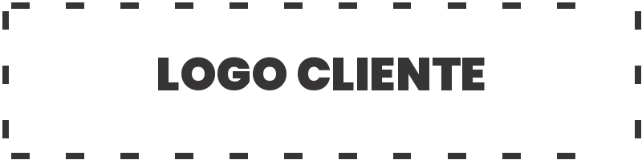

</Título de la propuesta
Propuesta comercial · Full Service
Una idea clara,
dicha en una sola frase.
Cada lámina responde una pregunta. Aquí va el planteamiento central, en Roboto Mono, con aire para respirar.
la afirmación principal

</Cifras que respaldan la propuesta
Descripción breve del indicador, con su fuente.
Cifra con unidad y periodo de referencia.
Comparación contra la línea base actual.
Plazo o hito medible y verificable.
</Cuatro pasos, una dirección
Descubrir
Entender el contexto y los objetivos del cliente.
Diseñar
Definir alcance, arquitectura y entregables.
Construir
Desarrollo iterativo con entregas parciales.
Operar
Despliegue, soporte y mejora continua.
</De hoy a lo que viene
Hoy
- Proceso manual y disperso.
- Información en silos.
- Tiempos de respuesta largos.
hecho a mano
Con Campuslands
- Flujo automatizado y trazable.
- Datos centralizados.
- Respuesta en minutos.
automático
</Seis módulos, un solo sistema
Módulo uno
Qué hace y qué problema resuelve, en dos líneas.
Módulo dos
Qué hace y qué problema resuelve, en dos líneas.
Módulo tres
Qué hace y qué problema resuelve, en dos líneas.
Módulo cuatro
Qué hace y qué problema resuelve, en dos líneas.
Módulo cinco
Qué hace y qué problema resuelve, en dos líneas.
Módulo seis
Qué hace y qué problema resuelve, en dos líneas.
Siguiente paso